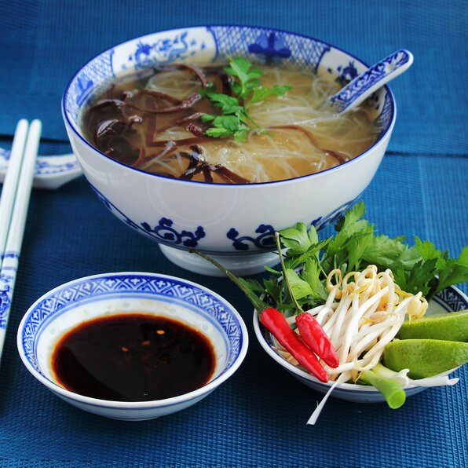

White Boy Pho

Description
Pho is a broth based soup dish traditionally from Vietnam. While pho is typically made with
some form of protein, today we will be creating a vegetarian pho. This is actually quite
a bit easier, as pho tends to be a customizable assortment of vegetables inside a broth,
with a choice(s) of protein added in. Let's begin.
Ingredients
- 2 scoops Pho base
- 1 oz Rice noodles
- 6 cups water
- 4 oz bean sprouts
- 1 oz basil
- 1 oz cilantro
- 1 oz mint
- 2 slices jalapeno
- 2 oz soy sauce
- 1 oz hoisin sauce
- 0.5 oz green onion
Steps
- Pour water into a pot and heat to boil. Set pho base near water and portion rice noodles into a bowl (noodles will shrink greatly after cooking).
- Prepare vegetables on seperate platter. Don't be worried if amounts aren't exact; pho is exactly what you want it to be.
- Once water is boiling, toss noodles in til tender. For pre-prepared noodles, this is 10-15secs. For non-prepared noodles, this will be 2-3min. Strain.
- Return noodles to bowl after straining. Add base to boiling water. Stir, and reduce heat to medium-low.
- Add your choice of vegetables on top of noodles. Ladle broth over, then add sauces. Garnish with green onion.
- Enjoy!